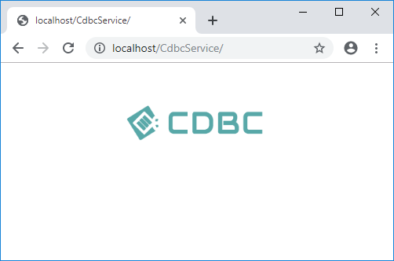

Deploy CDBC service
1. Download and unzip CDBC service.
You can download CDBC service from the following page.
CDBC service download page
2. Copy CDBC service files to IIS
Copy the folder CdbcService and its entire contents to iis home directory on your web server.
e.g.
C:\inetpub\wwwroot\CdbcService\
3. Convert the cdbc service folder into an Application
3.1 Open Server Manager
3.2 Right-click CdbcService and select Convert to Application.
3.3 When Add application window pop up, click the “OK” button.
You can customize the values if you wanted.
4. Confirm CDBC service
Navigate http://localhost/CdbcService/CdbcService.svc and http://localhost/CdbcService/.
You should see default cdbc page.

- You can change localhost into the IP address or your hostname.
Go to configure CDBC service
Next step is config CDBC service.
Config CDBC service